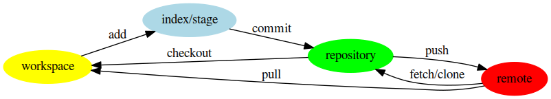

Git
Table of Contents
Introduction
Git is a famous and powerful open-source software for version control and management. It was developed by Linus Torvalds with C programing language. What is different from subversion, git adopts a completely distributed manner. Regarding its utilization, besides its built-in manual, there is also an excellent book, Pro Git, which can be obtained for free1. This post just summarizes the preliminary usage of git, which is referred from the book.
Installation
On Unix/Linux operation systems, git can be easily installed. Taking ArchLinux for instance, git can be installed via following command.
pacman -S git
For GUI, package tk needs to be installed additionally.
pacman -S tk
Usage
In the utilization of git, there are four important areas for storage, workspace, index (or stage), repository and remote. Their relationship can be illustrated by the figure below.

Create repositories
- Create a repository
git init /path/to/project
- Initialize the belonging directory as a repository
git init
- Download from a remote repository
git clone url
Configuration
Command git config can define the default preference or behavior of git. There are several files this command will read from and write to so we can set values globally or down to specific repositories.
- List the configuration
git config --list
- Repository-specific configuration
git config -e
- Global configuration
git config -e --global
Basic snapshotting
Add file(s)
Add the content from the workspace into index area for the next commit.
git add file1 [file2] git add directory
Remove file(s)
- Stop tracking file(s)
git rm --cached file1 [file2]
- Remove file(s) in workspace and index the removal in index
git rm file1 [file2]
Commit the revision(s)
The commands take the all/or the specific file(s) that have been staged with git add and record a new permanent snapshot in the repository and then moves the branch pointer on the current branch up to it.
- Commit all the files in the index
git commit [-m message]
- Commit specific file(s) in the index
git commit file1 [file2] [-m message]
- Replace the last commit with the new commit. If no changes for the codes compared to the last commit, only commit message will be updated.
git commit --amend [-m message] git commit --amend [file]
Branch operations
- List all the local branches
git branch
- List all the remote branches
git branch -r
- List all the branch including both local and remote ones
git branch -a
- Create a new branch pointing to a given commit. If not provided, the initial pointing of the new branch is
HEAD.
git branch branch_name [commit_name]
- Switch to an existing branch
git checkout branch_name
- Create a new branch and switch to it
git checkout -b branch_name
- Associate a local branch to a remote branch
git branch --set-upstream local_branch_name remote_branch_name
- Create a new branch and associate it to a remote branch
git branch --track branch_name remote_branch_name
- Merge a given branch into the current branch
git merge branch_name
- Remove a local branch
git branch -d branch_name
- Remove a remote branch
git push origin --delete branch_name git branch -dr remote_name/branch_name
Tag operations
- List all tags
git tag
- Create a new tag for a commit. If not provided, the tag is labeled on
HEAD.
git tag tag_name commit_name
- Show information of a tag
git show tag_name
- Commit a tag
git push remote_name tag_name
- Commit all tags
git push remote_name --tags
- Create a new branch pointing to a tag
git checkout -b branch_name tag_name
Information query
- Show revised file(s) in workspace compared to those in index
git status
- Show the revisions in a commit
git show commit_name
- Show the history of current branch (option
--statcan list the revised files)
git log [--stat]
- Show the modifier and time of a file
git blame file_name
Show the difference
- Show the difference between the workspace and the index
git diff
- Show the difference between the index and the last commit
git diff --cached
- Show the difference between two commits
git diff commit1 commit2
Remote operation
- List all the remote repositories
git remote [-v]
- Show the information of a remote repository
git remote show remote_name
- Add a remote repository
git remote add remote_alias remote_url
- Remove a remote repository
git remote remove remote_alias
- Download all the commit records from a remote repository
git fetch remote_name
- Download all the commit records from a remote repository and merge it into a local branch
git pull remote_name remote_branch_name
- Upload the local branch to a remote repository. If not provided, it will push to
masteroforigin.
git push remote_name remote_branch_name
- Upload all the local branches to a remote repository.
git push remote_name --all
Cancellation
- Recover the workspace from index
git checkout [file1]
- Recover the workspace from a commit
git checkout commit_name [file1]
- Recover index from a commit
git reset commit_name
- Recover index and workspace from a commit
git reset --hard commit_name
- Move pointer
HEADto a commit
git reset --keep commit_name